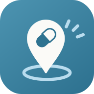

약지도 · 메디나눔개인정보 처리방침
한눈에
· 드시는 약·복용 기록·몸 상태는 기본으로 이 휴대폰 안에만 저장됩니다. 계정 없이 모든 기능을 쓰실 수 있습니다.
· 메디나눔 계정으로 로그인하시고 「서버에 저장하기」에 따로 동의하신 경우에만, 같은 기록을 메디나눔 서버(Supabase, 대한민국 서울 리전)에 복사해 폰을 바꿔도 이어 보실 수 있게 합니다. 계정은 만 14세 이상, 이메일 하나로 만듭니다. 계정은 앱 「내 정보 → 설정 → 계정」에서 만듭니다.
· 약과 몸 상태는 「개인정보 보호법」이 말하는 건강 민감정보입니다. 제3자에게 주지 않고, 광고·분석에 쓰지 않습니다. 광고나 이용자 분석 도구(SDK)를 넣지 않았습니다.
· 「부모님께 보내기」를 링크로 보내실 때만, 고른 약 목록·호칭·메모가 7일 동안 서버에 머문 뒤 지워집니다.
· 기록은 앱에서 언제든 지우실 수 있고, 로그인해 두셨다면 서버에서도 지웁니다. 계정과 기록 지우기 안내
메디나눔(운영자 박민욱, 이하 「운영자」)은 「개인정보 보호법」 제30조에 따라 약지도 이용자의 개인정보를 어떻게 다루는지 아래와 같이 밝힙니다.
1. 처리하는 개인정보의 항목과 수집 방법
모두 이용자가 앱 화면에서 직접 넣으신 것입니다. 몰래 모으는 것은 없습니다. 기록은 이 휴대폰에 저장되고, 로그인해 「서버에 저장하기」에 동의하신 경우에만 계정으로 메디나눔 서버에도 암호화된 연결로 보내 저장합니다.
| 어디서 | 무엇을 | 어디에 |
|---|---|---|
| 내 약 | 드시는 약(이름·성분), 복용 시간, 「먹었어요」 기록과 복약 달력, 필요할 때 드신 약과 시각, 남은 알 수 | 휴대폰 동의하면 서버도 |
| 내 몸 상태 | 나이대, 임신·지병 여부(고르신 것만), 불편했던 약과 직접 적으신 내용, 잘 들었던 약 | 휴대폰 동의하면 서버도 |
| 혈압 수첩 | 혈압·맥박·혈당과 잰 시각 | 휴대폰 동의하면 서버도 |
| 진료 예약 | 날짜·시각, 병원 이름(적으신 경우) | 휴대폰 동의하면 서버도 |
| 아이 약 용량(보호자가 쓰실 때) | 부르는 말, 생년월일, 몸무게 | 휴대폰 동의하면 서버도 |
| 보기 설정·날씨 | 글자 크기, 화면 밝기, 날씨를 볼 동네 | 휴대폰에만 |
| 계정(로그인하신 경우) | 이메일 주소, 비밀번호(되돌릴 수 없게 바꾼 값만 저장), 가입·마지막 접속 일시, 만 14세 이상 확인 | 서버 |
| 문의(로그인한 뒤 보내신 경우) | 문의 내용, 보낸 화면, 답을 드릴 계정 이메일 | 서버 |
| 부모님께 보내기(링크로 보내신 경우) | 고른 약 목록(10개까지), 호칭(예: 엄마), 한 줄 메모, 동의 시각, 받으신 분의 「샀어요」 표시 | 서버 7일 |
| 동의 기록 | 「서버에 저장하기」 동의 여부와 시각 | 휴대폰 |
이름, 주민등록번호, 전화번호, 주소, 정확한 위치, 기기식별자(광고 식별자 포함)는 수집하지 않습니다. 약 사진은 휴대폰 안에서 글자를 읽는 데만 쓰고 보내거나 저장하지 않습니다. 지금은 결제가 없어 결제 정보를 받지 않습니다.
2. 개인정보의 처리 목적
- 복용 시간에 알림을 드리고, 오늘 드실 약과 복약 달력을 보여 드리기
- 임신·지병·나이에 따라 피하셔야 할 약을 걸러 드리기
- 진료 때 그대로 보여 드릴 수 있는 기록(혈압 수첩·불편했던 약)을 만들어 드리기
- 아이 몸무게에 맞는 용량을 계산해 드리기
- 폰을 바꾸거나 다시 설치해도 기록이 이어지게 하기(로그인·동의하신 경우)
- 가족에게 고른 약 목록을 전해 드리기(부모님께 보내기)
- 문의에 답하기
위 목적에만 씁니다. 이용자 분석·광고·마케팅에 쓰지 않습니다.
3. 민감정보의 처리
드시는 약, 복용 기록, 임신·지병 여부, 불편했던 약, 혈압·혈당, 진료 예약, 아이의 몸무게·생년월일은 「개인정보 보호법」 제23조의 건강에 관한 민감정보입니다. 이 휴대폰 안에서만 쓰실 때는 운영자가 받지 않습니다.
서버에 저장하는 것은 「서버에 저장하기」에 따로 동의하신 경우에만이며, 동의를 받을 때 무엇이·어디에·왜·언제까지 저장되는지 먼저 알려 드립니다. 동의하지 않을 권리가 있고, 동의하지 않으셔도 약지도의 모든 기능을 이 휴대폰에서 그대로 쓰실 수 있습니다. 동의는 「내 정보 → 설정 → 계정」에서 언제든 거두실 수 있으며, 그때 서버의 약지도 기록을 곧바로 지우고 로그아웃합니다(이 휴대폰의 기록은 남습니다). 「부모님께 보내기」 링크는 보낼 때마다 동의를 여쭙니다.
4. 보유·이용 기간
| 무엇 | 언제까지 |
|---|---|
| 이 휴대폰의 기록 | 앱에서 지우시거나 앱을 지우실 때까지 |
| 계정과 그에 묶인 서버 기록·문의 | 계정을 지우시거나 「서버에 저장하기」 동의를 거두실 때까지. 그때 곧바로 지웁니다 |
| 부모님께 보내기 링크 | 만든 때부터 7일. 지나면 자동으로 지웁니다 |
5. 제3자 제공
운영자는 이용자의 개인정보를 제3자에게 제공하지 않습니다. 다만 「개인정보 보호법」 제18조에 따라 법령에 정한 경우나 수사기관이 적법한 절차(영장 등)로 요구하는 경우에는 그 범위 안에서만 제공하며, 그런 일이 있으면 이용자에게 알립니다.
6. 처리의 위탁
아래 일을 맡깁니다. 맡긴 곳이 개인정보를 다른 목적에 쓰지 못하도록 계약으로 정하고, 실제로 그러한지 살핍니다.
| 맡은 곳 | 맡긴 일 |
|---|---|
| Supabase Inc.(데이터는 대한민국 서울 리전에 저장) | 계정 관리(확인 메일 포함), 기록 저장(로그인·동의하신 경우), 문의 접수, 부모님께 보내기 링크 보관(7일) |
| Google LLC | 앱 배포(Google Play) |
7. 국외 이전
기록을 두는 서버는 대한민국 서울 리전에 있습니다. 국외에 두게 되는 경우 「개인정보 보호법」 제28조의8에 따라 이전되는 항목·나라·시점과 방법·받는 자·이용 목적과 보유 기간을 이 방침에 적고, 앱 안에서 따로 알려 드립니다.
8. 파기 절차와 방법
보유 기간이 지나거나 처리 목적이 끝나면 지체 없이 파기합니다. 전자 파일은 되살릴 수 없는 방법으로 지웁니다.
9. 이용자와 법정대리인의 권리, 행사 방법
- 언제든 자기 개인정보를 보고, 고치고, 지우고, 처리를 멈추게 하실 수 있습니다.
- 앱 안 「내 정보 → 설정」(계정 칸, 모두 지우기, 파일로 받기)에서 직접 하실 수 있고, usualhealth383@gmail.com 으로 알려 주셔도 됩니다.
- 동의를 거두시면 서버 저장이 멈추고, 그때까지 서버에 있던 약지도 기록을 곧바로 지웁니다.
- 앱을 쓰실 수 없을 때(폰 분실 등)는 계정과 기록 지우기 안내를 보세요.
- 요청은 받은 날부터 10일 안에 처리하고 결과를 알려 드립니다.
10. 만 14세 미만
계정은 만 14세 이상만 만들 수 있고, 만들 때 「만 14세 이상이에요」에 체크합니다. 계정 없이 쓰시면 기록은 이 휴대폰 밖으로 나가지 않습니다. 아이 약 용량 계산은 보호자가 쓰시는 기능이며, 아이의 정보(부르는 말·생년월일·몸무게)는 보호자(법정대리인)의 휴대폰과 보호자 계정 아래에 둡니다.
11. 안전성 확보 조치
- 휴대폰과 서버 사이는 암호화(HTTPS)해서 주고받습니다.
- 서버에 둔 기록은 암호화해 저장하고, 계정마다 본인의 기록만 읽고 쓸 수 있도록 서버에서 막아 둡니다.
- 「부모님께 보내기」 링크는 추측하기 어려운 무작위 코드로 만들어, 링크를 모르면 열 수 없습니다.
- 서버 관리 권한은 운영자 한 사람에게만 두고, 앱 안에는 관리용 열쇠를 넣지 않습니다.
12. 자동으로 모으는 장치와 인터넷에서 받아 오는 것
광고나 이용자 분석을 위한 도구(SDK)를 넣지 않았습니다. 이용자를 따라다니며 살피는 쿠키를 쓰지 않습니다. 휴대폰 안 저장 공간에는 기록과 로그인 상태·화면 설정을 둡니다.
아래처럼 공개된 파일과 정보를 받아 올 때, 받는 쪽 서버에는 여느 인터넷 이용처럼 휴대폰의 인터넷 주소(IP)가 전달됩니다. 약지도는 이 요청에 기록을 싣지 않습니다.
| 받는 곳 | 무엇을 |
|---|---|
| Google Fonts · jsDelivr | 화면 글꼴, 로그인 부품(로그인하실 때) |
| cdnjs | 약 사진의 글자를 휴대폰 안에서 읽는 도구(처음 한 번) |
| 식품의약품안전처 · 약학정보원 | 약 사진과 그림 표시 |
| Open-Meteo | 홈 날씨. 「내 위치」를 고르신 경우에만 대략 위치(약 10 km 단위)를 보내며 저장하지 않습니다. 도시를 고르시면 위치를 쓰지 않습니다 |
복용 알림은 휴대폰 자체 알람으로 울리며, 알림에 나오는 약 이름은 휴대폰 밖으로 나가지 않습니다.
13. 개인정보 보호책임자
| 이름 | 박민욱 |
|---|---|
| 연락처 | usualhealth383@gmail.com |
개인정보에 관해 물으실 것, 불편하신 것, 피해를 입으신 것은 위로 알려 주십시오. 받는 대로 답을 드립니다.
14. 권익을 침해당하셨을 때
아래에 도움을 청하실 수 있습니다.
- 개인정보분쟁조정위원회 1833-6972 · www.kopico.go.kr
- 개인정보침해신고센터 (국번 없이) 118 · privacy.kisa.or.kr
- 대검찰청 사이버수사과 (국번 없이) 1301 · www.spo.go.kr
- 경찰청 사이버수사국 (국번 없이) 182 · ecrm.police.go.kr
15. 방침이 바뀔 때
내용이 바뀌면 바뀌기 7일 전부터 이 쪽과 앱 안에서 미리 알립니다. 이용자에게 불리하게 바뀌거나 새로 동의를 받아야 하는 경우에는 30일 전부터 알리고 다시 동의를 받습니다.
| 시행일 | 바뀐 것 |
|---|---|
| 2026년 10월 13일 | 메디나눔 계정(선택)·「서버에 저장하기」 동의·문의를 더했습니다. 사진을 서버에서 읽는 기능을 없앴습니다. 운영 이름을 메디나눔으로 적었습니다. |
| 2026년 10월 8일 | 처음 시행 |